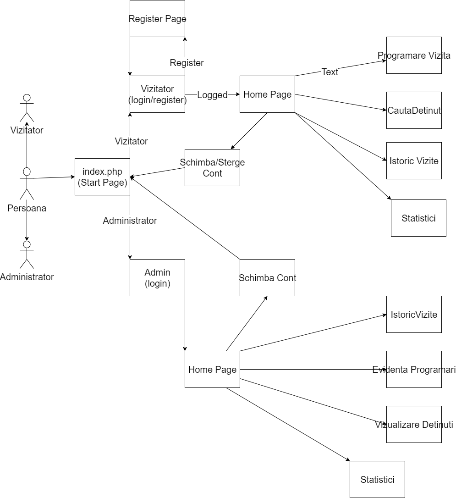
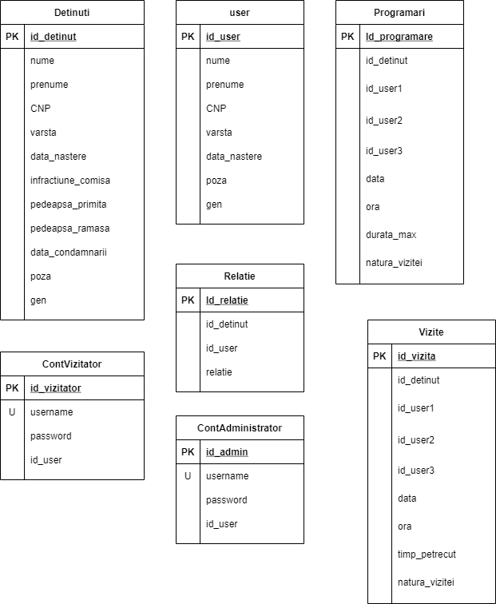

1. INTRODUCERE
1.1 Enuntul
Sa se dezvolte o aplicatie Web pentru gestiunea vizitelor de care beneficiaza persoanele condamnate la executarea unei pedepse intr-un penitenciar sau intr-o casa de corectie.
1.2 Scopul Aplicatiei
Aplicatia Detention Monitoring Tool , are ca scop principal fluidizarea
fluxului de vizite ce pot avea loc in cadrul unui centru de detentie si
ofera o solutie mai organizata de aface acest lucru.
Aplicatia ofera rudelor detinutilor posibilitatea de a inregistra programari
pentru vizite ce vor fi procesate de personalul penitenciarului, personalul
are posibilitatea de a aproba sau de a respinge anumite vizite iar vizitatorii
au posibilitatea de vizualiza un istoric al vizitelor facute si eventual sa
modifice o vizita programata daca mai este posibil.
2. DESCRIEREA GENERALA
2.1 Structura aplicatiei
Diagrama USE-CASE de mai sus ilustreaza modelul de functionare al aplicatiei DeMo dezvolatate. Actorii principali sunt: Vizitatorul sau Administratorul. Odata cu accesare link-ului catre aplicatie, li se va afisa pagina principala, de unde vor putea sa se inregistreze sau sa se logheze. In functie de rolul fiecarui (admin sau vizitator) interfata aplicatiei se va prezenta diferit si anume: Vizitatorul va avea la dispozitie pagini pentru a realiza urmatoarele actiuni: sa-si schimbe contul (pag. Home) sa programeze o vizita (pag. Programare Vizita), sa caute un detinut (pagina CautaDetinut), sa vada istoricul propriilor vizite (pag. Istoric Vizite), sa genereze statistici (pag. Statistici). Administratorul va avea deasemenea la dispozitie functionalitatile: sa-si schimbe contul si sa revina la pagina principala (pag. Home), sa vada istoricul vizitelor realizate (pag. Istoric Vizite), sa tina evidenta programarilor (pag. Evidenta Programari) , sa vizualizeze detinuti (pag. Vizualizare Detinuti), sa genereze statistici (pag. Statistici).
2.2 Baza de date

Baza de date contine urmatoarele tabele :
- Detinuti (salvam informatii cu privire la detinutii ce pot fi vizitati)
- User (folosita atat pentru inregistrarea a utilizatorilor cat si a vizitatorilor)
- Programari (avem informatii cu privire la programarile realizare)
- ContVizitator (avem infomatii strict despre vizitatori)
- Relatie (folosita pentru inregistrarea relatiilor intre detinuti si vizitatori)
- ContAdministrator (pentru retinerea informatiilor despre conturile administratorilor)
- Vizite ( retinem informatii cu privire la vizitele realizate )
2.2 Modul de functionare
Dupa logarea ca vizitator ai urmatoarele optiuni:
- sa iti faci o programare pentru vizitarea unui detinut;
- sa verifici programarile facute de tine in trecut;
- sa cauti informatii despre un detinut.
.png)
Dupa logarea ca admin ai urmatoarele optiuni:
- sa verifici istoricul vizitelor efectuate deja;
- sa vizualizezi ce programari sunt facute;
- sa vizualizezi informatii despre toti detinutii;
- sa vizualizezi date despre contul tau.
.png) Daca doresti sa iti creezi un cont, ai optiunea "REGISTER", unde
iti poti crea un cont, dupa care vei fi redirectionat pe pagina
de login pentru a te loga.
Daca doresti sa iti creezi un cont, ai optiunea "REGISTER", unde
iti poti crea un cont, dupa care vei fi redirectionat pe pagina
de login pentru a te loga.
.png)
3. INTERFATA GRAFICA
3.1 Paginile de start
Pentru interfata grafica a proiectului am folosit HTML5.
Astfel utilizatorul aplicatiei are la dispozitie urmatoarele functionalitati :
- pagina principala Home cu butoane de Login, SignUp si Login as Administrator;
- pagina de Login in care utilizatorul va avea de completat campuri
care fac referire la datele personale ce urmeaza sa fie inregistrate
pentru obtinerea unui cont
si parola aferenta contului,
dupa care va putea sa acceseze butonul de login, pentru logarea efectiva
- pagina de SignUp contine campuri de tip text, in care utilizatorul trebuie sa-si
introduca datele personale pentru a obtine un cont pentru aplicatia pe care am dezvoltat-o
- pagina de Login as Administrator este exclusiv pentru administratorul penitenciarului
care va trebui sa introduca in campurile prezente email-ul care i-a fost atribuit, respectiv parola;
3.2 Paginile Administratorului
Paginile corespunzatoare contului de administrator ,
pe care acesta le poate accesa din bara de navigatie:
- Home
- Istoric Vizite ( unde administratorul poate vedea intr-un
tabel vizitele realizate pana la momentul actual),
- Programari ( administratorul are la dispozitie un tabel in care
se stocheaza informatiile referitoare la vizitele viitoare)
- Vizualizare detinuti ( o pagina cu profilul detinutilor ),
- Detalii cont ( o pagina ce contine informatiile personale ale administratorului).
3.3 Paginile Vizitatorului
Paginile corespunzatoare vizitatorului sunt urmatoarele:
- adauga vizita ( unde vizitatorul trebuie sa completeze campurile cu
referire la datele personale si la datele intalnirii (ora, data), respectiv grad
de rudenie cu detinutul cu care vizitatorul doreste sa programeze o intalnire,
- pagina Cauta Detinut unde vizitatorul cauta in baza de date a penitenciarului,
un anumit detinut ( completand campurile : nume, prenume, cnp si cod unic detinut ),
- pagina Istoric vizite ( in care prin intermediul mai multor tabele,
vizitatorul poate vedea vizitele deja programate),
- pagina Home ( vizitatorul poate adauga o vizita),
- pagina Despre (vizitatorul va putea citi functionalitatile aplicatiei DeMo)
3.4 Tehnologii utilizate
Tehnologiile utilizate pentru realizarea aplicatiei sunt:
Limbaje de programare precum : JavaScript, CSS, HTML5, PHP.
Tehnica de programare Ajax pentru crearea unei aplicatii interactive.
Aceasta are ca scop cresterea interactivitatii, vitezei si usurintei in utlizare a aplicatiei.
Ajax nu este o tehnologie in sine . Termenul este folosit pentru
definirea aplicatiilor web ce folosesc un ansamblu de tehnologii:
HTML pentru structura semantica a informatiilor;
CSS pentru prezentarea informatiilor;
JavaScript pentru interactivitate, pentru procesarea
informatiilor prezentate.
Model-view-controller este un model arhitectural utilizat
in ingineria software. Succesul modelului se datoreaza izolarii
logicii de business fata de considerentele interfetei cu utlizatorul,
rezultand o aplicatie unde aspectul vizual si nivelele inferioare
ale regulilor de business sunt mai usor de modificat, fara a afecta alte nivele.